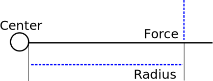
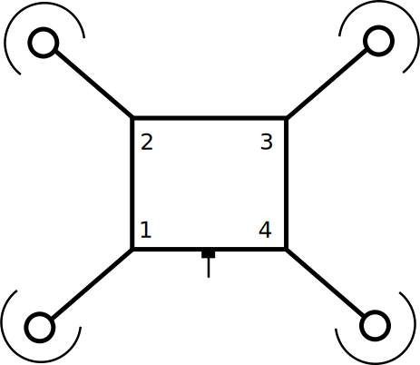
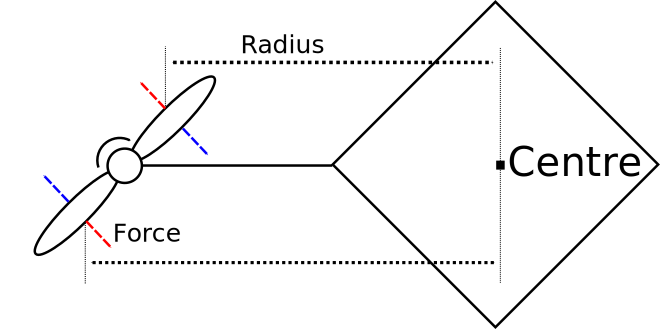

So, in our earlier article we talked about Yaw a little but, but we didn't get into details. First, let's take a look at what yaw looks like under simple circumstances, then we'll explain the motion.
Notice how two propellers come to a stop when yawing?
Understanding Torque
Let's first talk about Center of Gravity, have you ever tried to balance an object on the tip of your finger? That's a center of gravity! Fun Fact: Your center of gravity is your belly button! The quads is, predictably, near its center.

Torque ($$ \tau $$) is a twisting force, you use it when you do things like turn a door-knob handle, use a wrench, or pedal a bicycle. Now, the torque produced by a force equals the magnitude of the force ($$ F $$) times the radius ($$ r $$), or distance from the center of gravity.
$$ \tau = F*r $$
Back to Yaw
So what does torque have to do with the yaw of the quadcopter? Well, it turns out, a heck of a lot! Remember how the motors on our quadcopter spin?
Note again how motors on the diagonal travel in the same direction while motors on the same "side" travel in opposite directions.
Now, consider the torque generated by the motors.
In the diagram, blue arrows represent the force of the motor pushing on the air, while red arrows represent the force of the air pushing back on the motors.
Every action force has an equal and opposite reaction force. - Sir Isaac Newton
Note that the force is drawn at the centre of the propeller. In this example we're using the average distance and force to simplify calculations. Feel encouraged to follow along and use calculus concepts (representing the force as a continuous amount), the math still works out!
In our example we're only showing one motor, but recalling that two motors almost shut off while yawing, and the other motor is generating the same directional forces, it is safe to do this.
Calculating the net maximum torque in this diagram can be done using the following equation:
$$ \tau = F(r_1)-F(r_2) = F(r_1-r_2) $$
Where $$ r_1 $$ is the bottom (larger) radius, and $$ r_2 $$ is the top (smaller) radius. The key takeaway here is for each propeller despite the forces being equal, the radii are not and because of that, $$ \tau $$ is a positive value.
What we end up with is a small amount of torque being created by each of the two active motors, these two amounts are in the same direction, and can be added together!
The combination of these two torques is sufficient to cause the quadcopter to yaw (twist) in the air.
Let's Experiment!
In order to properly test our hypothesis, we rigged up an apparatus to demonstrate this yawing. Since the quadcopter propellers move too fast to be able to observe without specialized equipment we looked towards water.
This apparatus is designed to dip it's two wooden paddles into the water, with the rest of the device sitting at the surface of the water. The two paddles rotate the same as the two propellers we talked about above.

We were very impressed with the result. Note the yawing motion as we predicted. The apparatus did not hold up particularly well however, as you can observe, our eslastics were not particularly happy campers! This is because of the friction of them rubbing on one another.
Observing under Constraints
In order to capture this in the air we tied our quadcopter up via string, then harnessed a weight on the bottom of it to help smooth out it's flight height. Doing this we found using elastics particularly useful as a harness point.
But why didn't I see the two propellers stop?
Good question! Because the Quadcopter was still trying to hover in the air and could not entirely shut them off. Although you can't see it, they are actually rotating quite a bit slower.